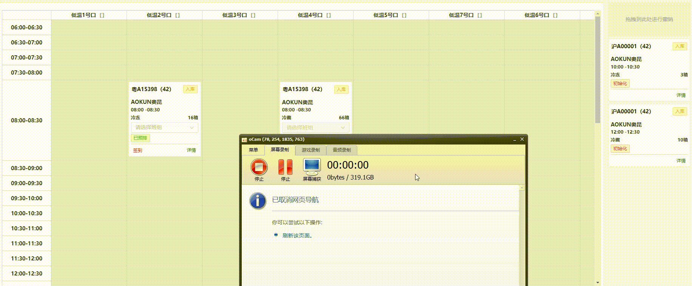

AMS初版设计流程
前言
AMS 全称 Appointment Management System（预约管理系统），主要责任是解决仓储物流中的资源利用、排队等待、物流准时性和客户满意度等仓储问题。
仓储作业通过提前进行预约，规范货主送货和承运商提货的作业时间，能够使仓储资源最大化，合理的调度和排班，最大化的提高仓储作业的效率。
同时通过提前预约可以进行预先安排和调度，根据预约时间窗口来分散到仓库的货物和车辆流量，减少排队和等待时间，提高物流效率。
平台背景
目前本公司所有的仓储系统有：WMS、OMS、TMS，再加上本次要讲解的AMS系统，统称为：O-A-T-W。各系统的功能和作用这里不再阐述，相信大家已经很是了解
本次主要目的是要讲述 AMS系统的基本功能。
设计思想
第一版的AMS设计很简单，能满足基本业务场景即可，后面再根据用户需求和实际场景再进行迭代升级。
AMS系统涉及到微信小程序端和浏览器WEB端两个操作途径：
微信小程序主要为外部用户使用，指本公司以为的人员使用，比如客户、供应商或者司机，他们通过微信小程序进行送货预约或者到货预约，提交预约信息后，数据传入WEB端经由仓库中控审核和调度。微信小程序提供的主要功能有：
首页展示
入库有单预约
入库无单预约
出库有单预约
出库无单预约
历史预约
我的司机
我的车辆
浏览器WEB端为AMS的管理后台，使用对象只限于公司内部，由仓库的管理者使用。基本功能包括：
预约仓库管理
仓库道口管理
时间窗管理
车型管理
司机管理
车辆管理
班组管理
创建预约
预约作业
计划与调度
以上功能满足了初版AMS的预约功能，设计思路基于最小可用原则，保证能够快速上线，开发周期短的原则为业务提供服务。
系统的流程如下：
流程很简单，满足基本操作：
（1）小程序下单预约
（2）仓库调度进行审核，预排道口和时间
（3）预排完成后，就等待司机到仓签到
（4）签到后进行道口停靠
（5）开始作业，作业完成后预约结束
流程简单到无法描述…
其实你会发现，既然是预约为什么没有 叫号和排队等待的节点，这个要顺便说一下，因素有很多，我觉得主要的有两个：
1、目前仓储的作业量不是很大，没有大到需要进行排队和叫号的必要
2、业务形态刚起步，不能改变太大，对现场运营和司机都是一种挑战
所以暂时的第一版，我们把叫号和排队的功能砍掉了。
功能介绍
预约仓库管理
管理可预约的仓库信息，主要包括仓库名称、仓库地址和联系人信息
仓库道口管理
为每一个仓库维护可以预约的道口，道口的关键属性有：温区、可停靠的车型，以及道口是否带舌板。
时间窗管理
时间窗管理主要是仓库运营人员对道口和作业的规划，时间窗限定了预约人可以预约的时间段，由仓库运营人员进行维护，根据各仓的作业时段进行合理的安排。
时间窗不只约束了时间，同时还在此基础上增加了货量、方数和车辆的限制逻辑，使得管理人员不仅可以控制作业的时间，同时对每一个时间段内的作业量也可以进行精准的控制。
车型管理
对仓库目前遇到的箱式货车的车型长度的维护和管理，比如：4米2，7米6等等，不同的车型能够停靠的道口是不一样，所以这里需要准确的维护每一辆的车型信息，以此来匹配正确的道口，否则将会出现车型与道口不匹配的问题，对于冷库来说，将会造成跑冷的问题，严重的甚至会撞坏道口的相关设施。
司机管理
司机管理就很好理解了，就是管理每次来仓库预约送货或者提货的司机信息，包含司机的姓名和手机号。
车辆管理
记录每次预约送货的车辆信息包含车牌和车型
班组管理
此处的班组管理只是一个人员的简单分组管理，并没有真实的做到人员的工班调度功能，此处目前只记录了此小组的组长，以及成员名单，用于预约作业的收发货工人调度。
后续这一块可能会继续完善成一个合理的工班排布功能，当然还得看仓库运作的实际情况是否需要。

创建预约
创建预约为预约单在WEB端的入口，仓库运营人员可在此处进行手动创建预约单，此功能的主要目的是，由仓库帮助司机或者客户进行预约，提供的主要功能有：
有单预约：关联出入库订单
无单预约：不关联出入库订单
在进行预约单录入时，可填入的信息包含：
货量信息
货量的温区信息
司机信息
车辆车型信息
预约时间
预约道口
目前做的不好一点是，在进行有单预约时，订单的来源是从OMS和WMS两个系统中进行抽取的，和理想中的规划有很大出入，理想中的是，订单统一从OMS系统进行拉取，因为OMS是整个系统的订单中心，所有的单据源都应以OMS系统为准。
预约作业和计划调度
这两个放在一起讲的原因是因为他们两个是一个东西，只不过以不同的方式进行展示而已：
预约作业界面是以常规的表格形式进行展示，可以在此页面看到整个的预约列表，以及可以进行对预约单的操作：
快捷搜索
签到
安排道口
完成
取消
导出
由于我们去掉了排队叫号的环节，所以整个预约作业就比较简单（你也可以说就是个表格登记………）
计划与调度页面是一个道口和时间的表格可视化展示，页面分为左右两部分，左边是以道口和时间为维度形成的一个预约表格，右边展示预约信息，可以进行拖拽，将预约单放到对应的预约时间的表格中，具体操作方式如下：

可视化的展示方法更方便仓库运营人员对预约信息进行一个合理的调度和安排，直观清晰的展示第二天的作业信息。
微信小程序展示
当前预约页面
立即预约页面

|
我的信息页面
 |
|---|